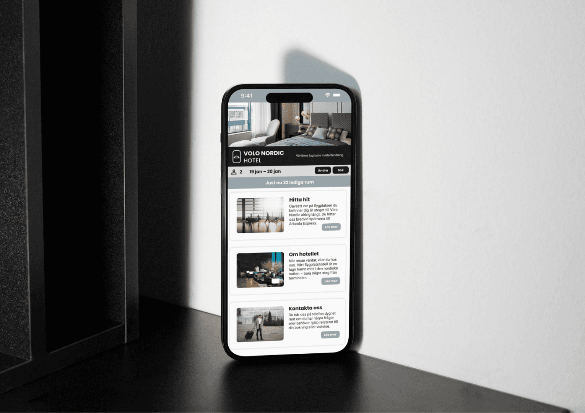
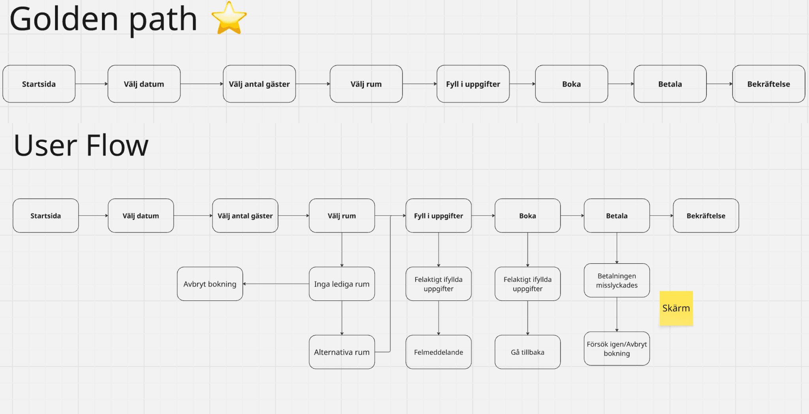
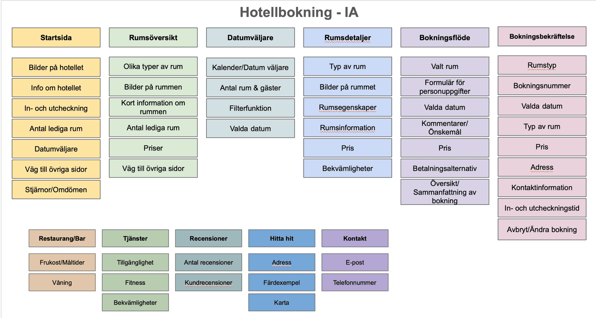
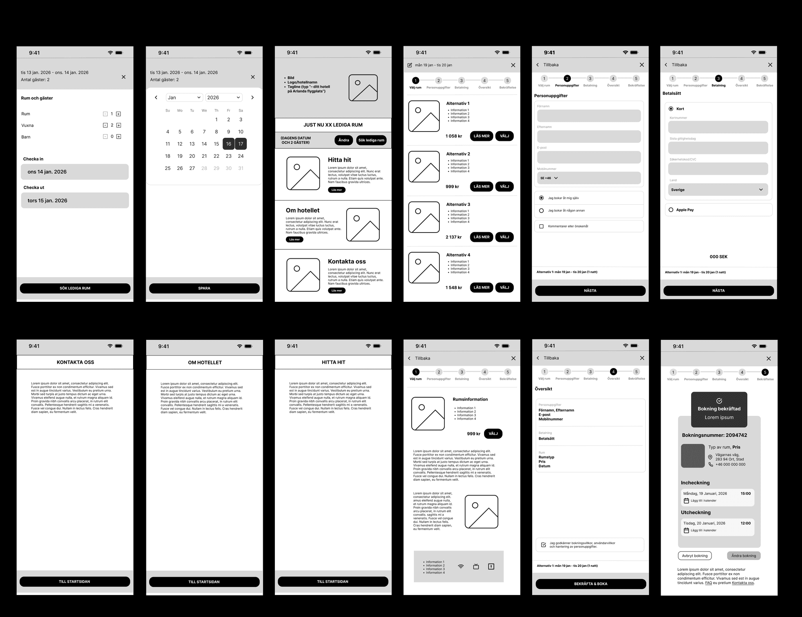
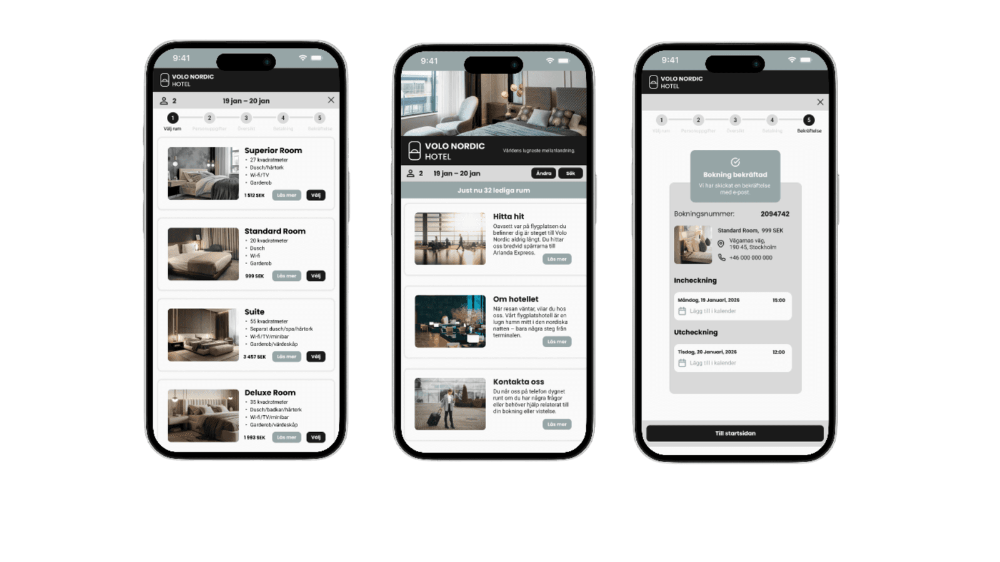
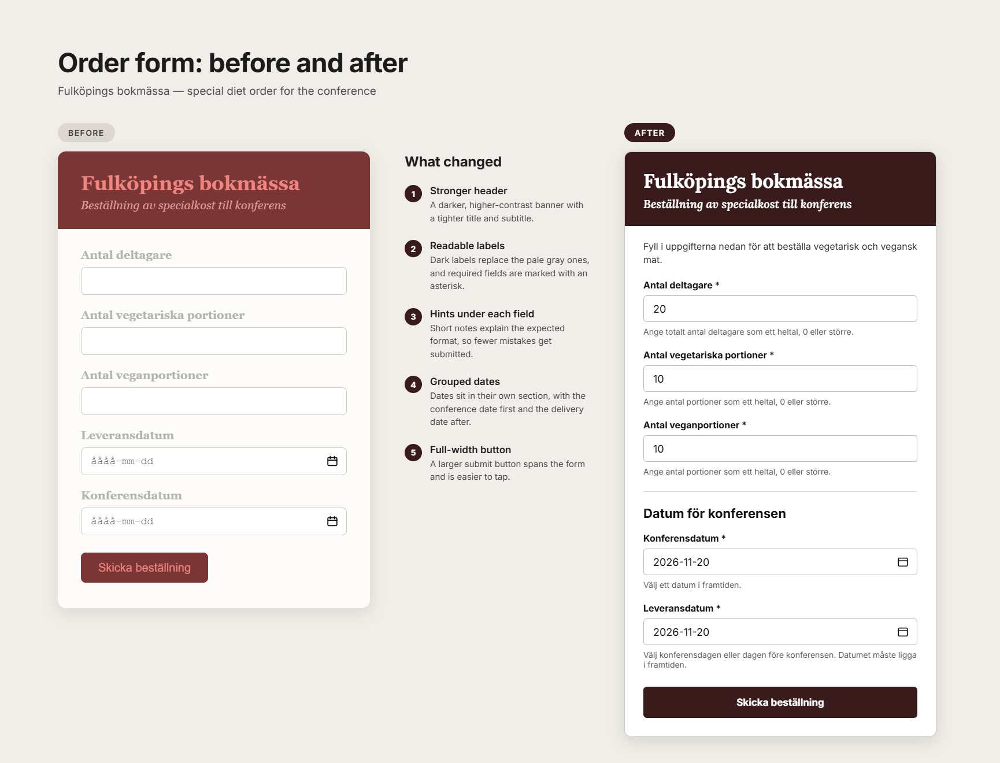

Volo Nordic Hotel — Mobile booking
- UX Design, Prototyping, User Flow
- Wireframing, UI Design
- 2025

Project info
This project focuses on a Scandinavian airport hotel designed for travelers in urgent situations, such as flight delays or cancellations. The hotel emphasizes simplicity, accessibility, and affordability, offering a calm and reliable place to stay during stressful travel disruptions.
- Focus
- Mobile-first booking flow
- Deliverables
- User flow, IA, wireframes, hi-fi prototype
- Year
- 2025
- Tools
- Figma
01 — Overview
Design a simple, mobile-first hotel booking experience that helps stressed travelers quickly find and book a room with minimal effort and maximum clarity.
02 — The problem
Travelers facing delayed, canceled, or missed flights often need to quickly find accommodation in a stressful situation. Existing booking experiences can feel overwhelming, slow, or unclear when time and clarity matter most.
- Complicated and time-consuming booking flows
- Lack of clear availability information
- Stressful user experience during urgent situations
- Poor prioritization of essential information (location, availability, price)
03 — Research and insights
The design focuses on simplicity, clarity, and emotional reassurance. A clean, Scandinavian-inspired visual style with soft colors and minimal elements was used to create a calm experience. Key actions like booking and checking availability are prioritized at the top of the interface.
04 — Design process
Started with user scenarios and flows based on real travel disruptions. Mapped the information architecture and a “golden path” through the booking. Created wireframes, tested them with users, and iterated based on feedback. Final designs were developed into a high-fidelity interactive prototype.



05 — Final solution
Problem 1: Complex booking flow → Simplified, step-by-step booking process with clear progress indicators.
Problem 2: User stress and uncertainty → Calm, minimal design with clear availability messaging and pre-filled booking details.
A mobile-friendly booking prototype that allows users to quickly check availability and complete a reservation in a few clear steps. User testing showed that the flow was intuitive and easy to navigate.

06 — Reflection
- Keeping early designs simple helps users focus on flow rather than details
- Clear structure and guidance reduce stress in high-pressure situations
- User testing is essential for identifying small but impactful improvements
